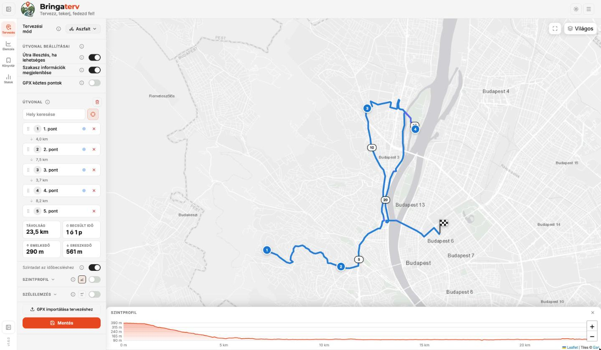
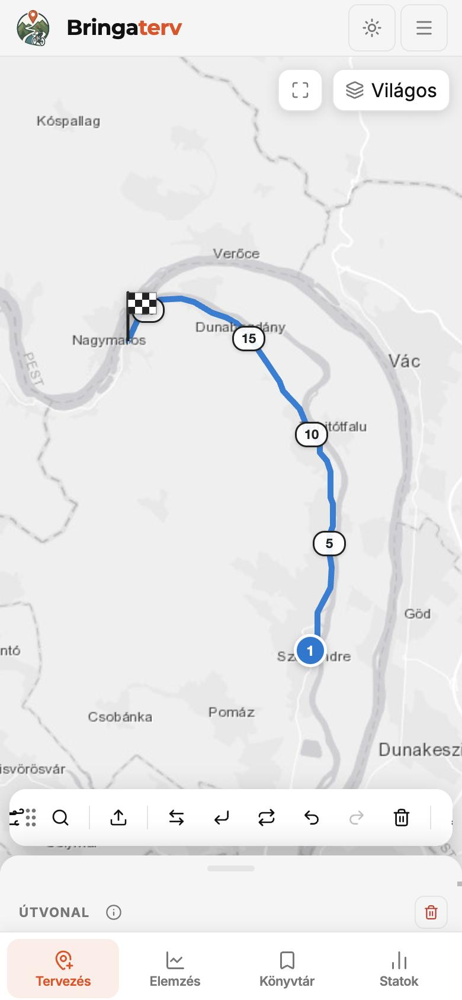
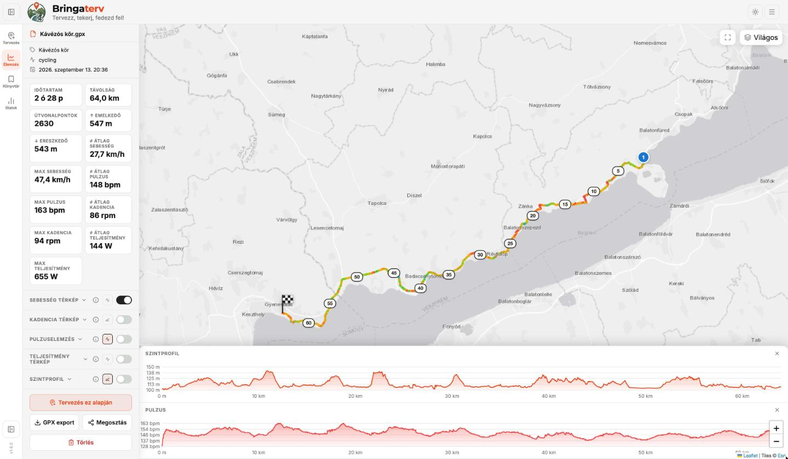
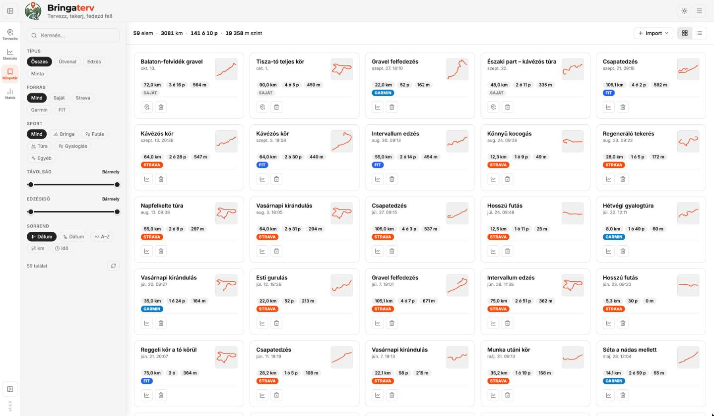
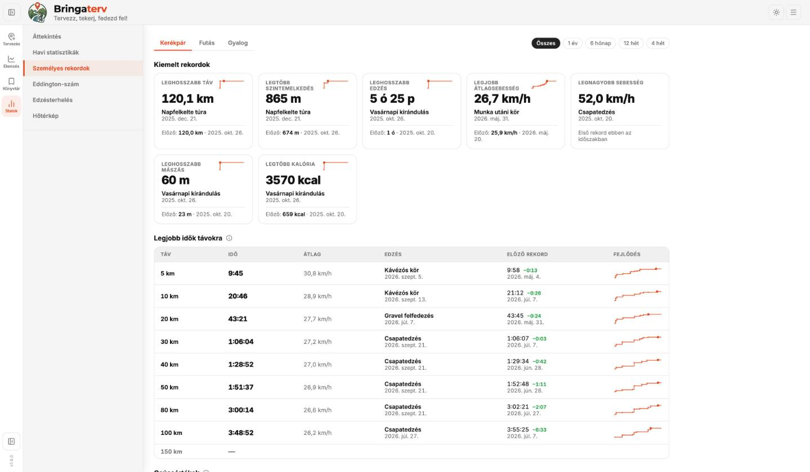
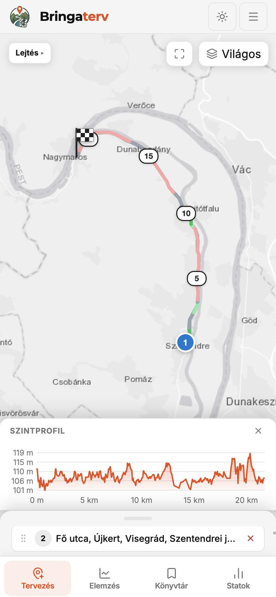

A Bringaterv útvonaltervező és edzésnapló egy helyen: megtervezed a túrát szintprofillal és szélelemzéssel, elküldöd a Garminodra, utána pedig mindent visszanézhetsz – sebesség, pulzus, teljesítmény, rekordok. Gépen és telefonon is.
Ingyenes, reklám nélkül – az adataid nem kerülnek harmadik félhez.


A túra előtt megtervezed, utána visszanézed – menet közben a megszokott GPS-ed (Garmin, Wahoo, Magene…) navigál és rögzít.
Kattints a térképre, és az útvonal járható utakon vezet – országúti, gravel, MTB vagy túra profillal. Táv, szint, menetidő azonnal.
Minden tervezett útvonal és edzés a könyvtáradban: kereshető, szűrhető, letölthető. Strava-ból és Garminból magától is bekerül.
Sebesség, pulzus, kadencia, teljesítmény a térképen színezve, pulzuszónák, terhelés, rekordok és statisztikák.
Pontokat teszel a térképre, a Bringaterv pedig összeköti őket – úgy, ahogy a te bringáddal érdemes menni.
Töltsd be a GPX- vagy FIT-fájlt (Garmin, Magene, Wahoo, Bryton, Hammerhead…), vagy hagyd, hogy a Stravából magától bejöjjön.

Átlag és maximum, színezés a saját sebességsávjaid szerint.
Mennyi időt töltöttél az egyes zónákban – idő és százalék.
Az időtartamot és az intenzitást együtt súlyozó terhelésmutató.
Pedálfordulat a táv mentén, saját sávokkal.
Wattok a térképen és grafikonon, csúcsteljesítmények 5 mp – 60 perc között.
Emelkedő, ereszkedő, a meredek szakaszok kiemelve.
Szembe- és hátszél a tervezett útvonalon, a valós időjárás alapján.
A Stravából, vagy becslés a saját kerékpáros profilodból.


A Bringaterv telefonra szabott felülettel is működik, és App Store nélkül, két koppintással telepíthető a kezdőképernyőre – iPhone-ra, iPadre és Androidra is.

Az új edzéseid maguktól bekerülnek – akár azonnal, értesítéssel. A régebbieket is behúzhatod egyszerre. A Bringaterv csak olvas, semmit nem ír vissza.
Edzés-import, okosmérleg testsúly-szinkron, és a megtervezett útvonal egyenesen az órádra vagy a bringás navidra.
Link és QR-kód (a megnézéséhez nem kell regisztrálni), megosztó kép a közösségi médiába, nyomtatható PDF útvonallap térképpel és szintprofillal.
A Bringaterv jelenleg meghívásos tesztüzemben fut. Ha kaptál meghívó linket, azzal egy perc alatt regisztrálsz – ha már van fiókod, egyszerűen lépj be.